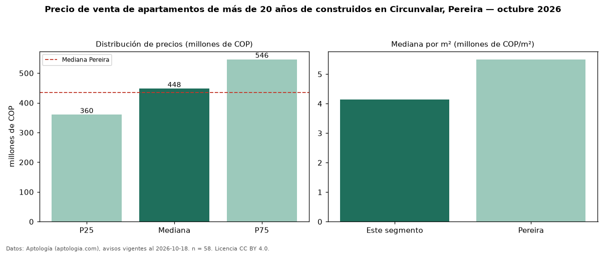

Precio de venta de apartamentos de más de 20 años de construidos en Circunvalar, Pereira — octubre 2026
En Circunvalar, Pereira, la mediana de precio de venta de apartamentos de más de 20 años de construidos es COP 448 millones, según 58 avisos vigentes. Prácticamente coincide con la mediana de todos los apartamentos en venta de Circunvalar (COP 450 millones, n = 99); este segmento reúne el 59 % de esos avisos. Por metro cuadrado, la mediana es COP 4,15 millones/m² (n = 58), 8 % por debajo del conjunto de referencia (COP 4,50 millones/m²). El área mediana anunciada es 111 m². El segmento con más oferta es el de 3 o más habitaciones (55 avisos, mediana COP 450 millones). La administración mediana declarada es COP 486.000 al mes (n = 52). El estrato más frecuente es 6 (67 % de los avisos con estrato). La mediana de todos los apartamentos en venta de Pereira es COP 435 millones (+3 % de diferencia). Datos: Aptología (aptologia.com), CC BY 4.0 — https://www.aptologia.com/venta/pereira/circunvalar. Archivos: PDF, CSV con las cifras y gráfica PNG.

| Avisos únicos | 58 |
|---|---|
| Percentil 25 | COP 360.000.000 |
| Mediana | COP 447.500.000 |
| Percentil 75 | COP 546.250.000 |
| Mediana por m² | COP 4.148.550 |
Fuente: avisos vigentes de portales inmobiliarios recopilados por Aptología, deduplicados (mínimo 30 avisos únicos por celda). Precios pedidos, no cerrados. Fecha: 2026-10-18.